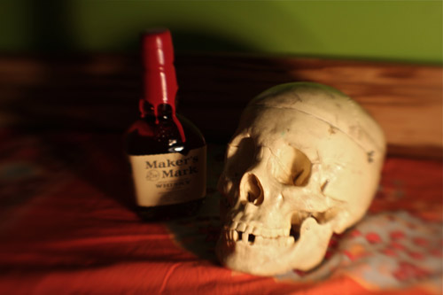
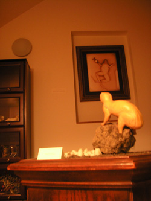
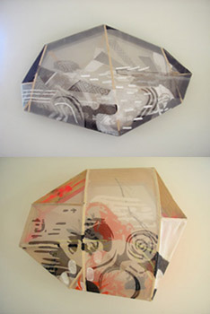

NEPO 4: Identities revealed
Dear visitors,
Welcome to Natural Educational POrtal (NEPO). I am happy to announce that the state of affairs in our museum isn't nearly as bad as previously thought and imagined. Despite the current economic situation, we were able to open many new exhibits to public. We can only speculate, that the source of this good fortune can be attributed to a sudden, and so far unexplained, influx of karma bucks.
Therefore I am extremely thankful to the generous volunteer employees of NEPO for sharing their talents and skills, and in general, for being and doing good. I'm happy to reveal the true identities of the participating artists and give credit where credit is due. So please, read on, see their work.
Offered in service, yours and truly,
klara
p.s. Clicking on the real artist's name will take you to their web site
--------------------------------------------------------------------------------Claude Bourbon = Cable Griffith
Here, a late 19th century still-life painter is found surrounded by his cherished possessions, rendering a human skull, while contemplating his own mortality. An endangered species, Imitare Academie continues his quest for answers through observation, representation, and libation.
Please do not feed or tease Mr. Bourbon - the solvents and subject matter make him irritable.
Flora Brassica = Francesca Lohmann
Presented are my visual explorations into the structure of a typical dicot flower bud, which shows 4 sepals, 4 petals, 6 anthers, and an ovary. The specimen I observed was a cabbage flower bud, a member of the plants in the mustard family (Brassicaceae).
Pu-pa Dada = Glenn Herlihy
Title: H2Oil
Long ago when oil roamed the earth life was hard.
With the increase in rain, water based life forms emerged at the surface and established themselves for thousands of years. But now we are once again seeing oil rising to the top.
They don't mix.
HB Dixon = Anne Blackburn
Ticonderoga
HB Dixon
The Ticonderoga is the world's best selling pencil.
Satin smooth finish enhances writing comfort; exclusive graphite core formula gives you extra smooth performance crafted from reforested California cedar.
Top quality eraser provides easy, clean corrections.
PMA certified non-toxic.
Now genetically engineered for better performance.
Randy Dodge = Lauren Klenow

Randy Dodge grew up the small port town of Djupivogur, Iceland and spent his time listening to moss and talking to very small rocks. His interest in nature and botany led him on adventures from Papua New Guinea to the outback of Australia. Currently Randy is working on a large-scale project comparing moon landscapes to the rocky shores of his native homeland.
Mance Engine = Troy Gua

What ever happened to Patience?
Observe this modern man's attempt at learning patience. In his world of technology, everything is fast-paced, based on instant gratification. His is a culture of immediacy, focused intently on the now.
He is painting in an effort to control his compulsion for the instantaneous. Can he count to ten so slowly that he literally watches his paint dry? Can modern man recapture the virtue of patience?
Your brain - unplugged
In today's high-stress world of over-stimulating torrents of information, it has become increasingly difficult to turn one's brain off at night to sleep. Thoughts of today's events and tomorrow's possibilities bombard the brain in constant assault. Are you able to allow your mind to unplug? To revert to gelatinous peacefulness for its necessary nocturnal rejuvenation?
Buckminster Fullest = Christopher McElroy and Ashley Jerman
Buckminster Fullest is a collaborative effort between a couple that found each other in the mountains of the American west. Having worked together on projects such as travelogues, music boxes, and plush children's toys, the duo is presenting a new series of story-telling compositions that will shed light on some of their more far-fetched stories from the travelogue era. Photography, artifacts, and audio accompaniment will lay bare some hotly contentious truths.
Gallery 4x10 = Todd Jannausch
This once proud gallery which represented some of Seattle's finest artists has fallen on hard times. Like so many galleries, the ever increasing cost of overhead and a lack appreciation for art has forced Gallery 4x10 to move in new directions. As a result our patrons have become our artists... but then again, maybe they always have been.
Christian Hewitt Gerald = SuttonBeresCuller
What can we say? It's "The Masterpiece". Thanks to all that took turns as museum guards and collectively assured the safety of this valuable work of art.
Augusta Jenkins = Nuala Ni Fhlathuin
Ms Jenkins (1820?- 1905) was born in Southern Wales into a family of itinerant lace peddlers. As a child she developed an unbecoming interest in science and the natural world and shunned worldly goals to pursue her passion. Living a life of almost total exclusion, she unexpectedly came to find public recognition and wide-spread fame at the age of 72, as the discoverer of the first known specimen of the Lesser Spotted Widget Frog.
Limb Gross = Timothy Cross
We don't know for sure, but we suspect these precious jewels came from Mr. Gross's heart.
Recreation Institute = Zack and Gala Bent plus children
Founded in 2001, the Recreation Institute has established a new vision for synthetic togetherness. By formulating banal forms and obscure gestures this collaborative has systematically failed to reach achievement while working steadily at substantive being. Paramount to their practice of inquiry is the equal honoring of industry and leisure, the Institute's members can typically be found in a phenomenological aura of elation while bearing soiled hands.
Stace Kitsmind = Jason Hirata
OK!The phone returned! I must admit that I missed it's arrival in the baguette. Rumor has it that the baguette was vibrating and got eaten regardless. The next morning only the phone was left on the kitchen counter.
Kolafantasprajt = Marek Stepan
Live from Czech Waffle Cemetery: Skype call with Kolafantasprajt
Kolafantasprajt is an admirer, devoted fan and a copy-cat of a great American burned waffle artist Pivo Vino.
Jay V. Lempotek = Joey Veltkamp
Dusty LeFleur = Susanna Bluhm and Amanda Manitach
Dusty is a snake charmer and scientist who spent her childhood years in India. This is her first art project.
lunchbox = Larry Naylor
Lunchbox's show and tell.
These are some of my fathers work tools. My dad is a spaceman whose job is mining planets for metals and other things that we need for living a good life on earth.
one minute egg: When I was little we lived close and I could walk to school, but then we moved away farther so I had to use one of dad's old escape pods to get to school with. It's fun to ride in.
globe globe: This machine helps look for new planets. When you turn it on you can see most of the universe.
looker man: This little guy is for scouting the best places to blow up. He likes to find metal and gold!
fusion machine: This one is for making the big holes in planets so we can dig out the metal. Please don't turn it on because it could blow up!
Abraham Marlowe = Anthony Sonnenberg
Ecological Sampler of the Home State
A sampling of Mr. Marlowe's extensive personal collection of Texas flora and fauna. Mr. Marlowe assembled this collection with the intention of keeping a physical connection to the land of his birth, no matter where in the world he goes.
Vidrio Massimo = Daniel Carrillo
Vidrio Massimo is a self-taught mezzotint artist and photographer. Born in Mexico and raised in California, he moved to Seattle in 1997. He has been printmaking for seven years and developing and processing black and white film since the age 15. His work has been exhibited in Davidson Galleries, Gallery 110, Sev Shoon, CoCA , Shenzhen, China, Some Space, and included in several juried exhibitions. He is currently working on a series of Seattle artists portraits using the collodion process disovered in 1845.
Sudo Na Me = Robin Crookall

nub = Mark Callen
This artifact relates to a newspaper article from the Seattle Times, August 20th 2010. The Japanese sent thousands of balloon bombs across the Pacific on the jet stream during WWII . The only fatal consequence of these actions occurred near Bly, a small town in Oregon. I have a deep connection to that area, and the story struck right to my heart. I'm wondering if the balloon sent off at last Nepo made its way to Japan...
Mrs. Evelyn ShaBOOBY and PIE-d Pauper
Mrs. Evelyn ShaBooby lectures on "Growing Up and other Mathematical Problems" with ASSistance from the PIE-D Pauper
Lali Skyway = Saya Moriyasu
This conceptual piece grew out of an email exchange between Lali Skyway and Alias Bosorka. Lali learned that -- for her -- "coming back to Earth" meant getting a job.
Zubr Soshka = Klara Glosova
Going, going, gone
Three rare specimen from the Bison bison, pla-and-stic and slick periods of planet Earth (circa 1800 bs until 210000 gph). Donated to us by Universally known explorer, leading trophy hunter and back to future guide Zubr Soshka (not to be confused with his namesake that currently resides at the Prague castle). Soshka's deep and thorough genealogy research of his own roots led him to a freaky encounter with his now-extinct predecessors in the remote lonely regions of spiral bard galaxy, on the edge and far from the center. Upon his return he was never the same.
Pivo Vino = Scott Hotchkiss
still waffling around...
Matthew Wolf = Rumi Koshino
Untitled, 1948-51, "This might be grapes or fruit or hanging garlic."
Breathing museum Ödön Lechner(1845–1914), the most important proponent of Hungarian art nouveau, designed the three-storey building at Üllöi út, which opened its doors in 1896. In contrast to his work on the later Post Savings Bank building, Lechner still had recourse to past – especially oriental – architectural forms for the Arts and Crafts Museum, and melded them with national elements from Hungarian folk art into a new style. Granite tiles and roof tiles in colourful patterns from the Zsolnay factory in Pécs enliven the façade. To the right of the main entrance stands a statue of the architect, created by Béla Farkas in 1936. The central inner courtyard, which is covered by a glass roof, and the ticket hall in front of it almost appear like a fairy tale with their mixture of Indian and Moorish designs. The construction with its unclad steel supports, similar to the West Railway Station, was highly modern at the time. The exhibition on the ground flooraround the courtyard covers Hungarian domestic culture from the Biedermeier era up to the start of the 20th century (approx. 1850–1900). Furniture, craftwork, carpets and other interior design items are shown in individual rooms that each represent a specific historical style or fashion. On the first floor, in similar manner to the rooms on the ground floor, it is possible to get a realistic idea of domestic life from the classical to Biedermeier era (approx. 1800–1850). The dome hall and the east wing accommodate five further departments on the development of Hungarian arts and crafts.
iateit yesterday = Bryan Schoneman
This device is used to measure the weight of the human soul using the exact body weight of dirt as the counter balance of for the human. According to Pre-Enlightenment beliefs if one could attain perfect equilibrium with the dirt, the human is then required to eat the dirt to complete the cycle and become completely attuned to the earth. The status of the person changes to a sort of agricultural prophet advising others on planting times, harvest, and particular rituals.
Susan Parr = great poet read from her book PACIFIC SHOOTER
Susan Parr did a really great and lively reading from her book. As of now I don't have a photo of her performance, but will add that, or video, as soon as I get one. In this picture she is standing to the far left of the general mayhem.
Shenandoah Davis = awesome musical guest
Thanks for visiting, I will add more pictures and video as they come, so please check back. Also, a NEPO documentary is in the works by a documentary filmmaker Brad Vandergurg. More on this soon!
I will leave you with a paragraph about the value of artists in modern society.
"The definiteness and directedness of the conscious mind are extremely important acquisitions which humanity has bought at a very heavy sacrifice, and which in turn have rendered humanity the highest service. Without them science, technology, and civilization would be impossible, for they all presuppose the reliable continuity and directedness of the conscious process. For the statesman, doctor, and engineer as well as for the simplest labourer, these qualities are absolutely indispensable. We may say in general that social worthlessness increases to the degree that these qualities are impaired by the unconscious. Great artists and others distinguished by creative gifts are, of course, exceptions to the rule. The very advantage that such individuals enjoy consists precisely in the permeability of the partition separating the conscious and the unconscious. But, for those professions and social activities which require just this continuity and reliability, these exceptional human beings are as a rule of little value."And here is what others are saying about NEPO:
In Art News The House That Is Colonized by Art by JEN GRAVES
The Stranger Suggests for Saturday September 25th, 2010
Nepo House: Where Art Lives (And Don't Pay Rent) by BOND Huberman
Free art for the weekend by Joey Veltkamp
7 Illuminating Things from the Weekend by BOND Huberman
NEPO 4 (US) by Amanda Manitach
So Much Local Art It Hurts: Fourteen—14!—Shows by JEN GRAVES
Dear teachers, students, friends and fans,
with the season's change time has come - again - for a visit to our Natural Educational POrtal.
You are cordially invited to attend:
NEPO 4: Back to School, Back to Earth Special!
Saturday September 25th, 2010, 6-12 pm
NEPO House, 1723 S Lander Street, Seattle, WA 98144
(all artists are showing under pencil names (=pseudonyms). True identities will be revealed during the evening.)
NEPO 4 is about learning. Inspired by the plight of guinea pigs, our brave artists stepped into the role of model organism and subjected themselves to all kinds of experiments (voluntarily or not). The role of our show is to make their failures and successes public, "with the expectation that discoveries made in the organism model will provide insight into the workings of other organisms". These new discoveries will be presented in the style of a Natural History Museum, where exhibits will contain live humans (performances), objects and missing objects (some exhibits may be temporarily shut down due to lack of funding).
Warning: The museum serves as a metaphor for our art world, and world in general - it might reflect it's current state!
And last, but not least, I am very excited to announce that poet Susan Parr will read poems from her book PACIFIC SHOOTER
---- and ----
our musical guest will be none other then awesome Ms. Shenandoah Davis!
NEPO 4: Performance schedule
for Saturday 9/25
6:00 - NEPO OPEN
6:30 - ongoing Finding the Weight of a Horizon by iateit yesterday
8:00 - lecture by Mrs. Evelyn Shabooby and PIE-d Pauper
9:00 - poet Susan Parr reading from her book Pacific Shooter
9:30 - musical guest Shenandoah Davis
11:00- Skype call with Kolafantasprajt (jokes in the cemetary)
11:30- The Phone Returns by Stace Kitsmind
12:00- NEPO CLOSED
Additional performances by Claude Bourbon, Mance Engine --and maybe even Christian Hewitt Gerald-- throughout the evening.
NEPO 4: Hours
Saturday 9/25 - 6:00pm-midnight
Sunday 9/26 - 12:00-4:00pm
Monday 9/27 - Friday 10/1 by appointment (send email)
Saturday 10/2 - 3:00-6:00pm